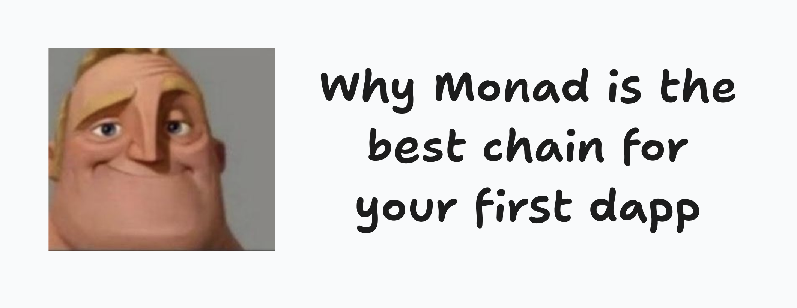

Why Monad is the best chain for your first dapp

Honestly, Monad is the best chain to start on as a new developer.
I work at Monad, so take this with a grain of salt.
Your first chain should let you learn dapp development&iteration without making you learn its private dialect at the same time.
When you pick a first chain you are really picking between the EVM world and everything else. Solana wants Rust and its own account model, and none of that carries anywhere else. Sui and Aptos want you to learn Move, Starknet wants Cairo. Nothing wrong with any of those chains, BUT you’d be learning a new language and how dapps work at the same time.
The code is ordinary EVM code
Yes, it is the same thing as Ethereum, Arbitrum, Optimism, Base, and many others that have EVM compatibility.
I tested this by accident when I asked a local Gemma 4 12B to build a dapp. I told it to build a last-clicker game with Solidity + Foundry.
The model made plenty of mistakes at first. It mixed Hardhat into a Foundry test and invented viem methods. The agent spent three rounds trying to do one thing. But the story is not the agent’s incompetence.
Once the contract finally worked on a local network, deploying it to Monad was as easy as changing the rpc url:
forge create src/LastClicker.sol:LastClicker \
--rpc-url $MONAD_RPC_URL \
--broadcastAnd I changed nothing before I tried to deploy the contract to Monad. The LLM I was using did not need any Monad specific info because Monad runs EVM bytecode and supports the Ethereum JSON-RPC methods.
The only Monad specific thing in that whole repo is a small MONAD_CONTEXT.md file, and most of it is the rpc url, the chain id (10143) and a list of stuff the model got wrong that had nothing to do with Monad.
That gives a beginner a ridiculous amount of existing material to learn from. A Solidity course written for Ethereum works fine (I am a big fan of speedrunethereum.com and whatever is on ethereum.org). You can use Foundry when you want proper tests or hardhat if you like to go old school. Read the current deployment summary. Also if you want something really comprehensive buildanything.so is amazing!
For a beginner, portability is IMPORTANT. If you decide Monad is not for you six months later (you might! But I believe you won’t), the contract skills come with you. The stack you learn is useful across the EVM world and the EVM is here to stay.
Fast feedback is a learning feature
Monad currently produces a block every 300ms and reaches finality after two blocks. Click a button and get feedback in under a second.
That changes how a first app feels. On a 12 second chain like Ethereum mainnet (or even a 2 second L2) the loop goes like this: you submit the transaction, wait a bit, think about life, and only after that you see the UI update. On Monad the loop is closer to normal application development because the result comes back while the change is still in your head. And I can hear you saying hey I can test it on a local blockchain and have almost instant confirmation and yes you can do that but there is a point in which you will move over to testnet and Monad testnet is FAST.
I felt this while building puddleswap. I didn’t do any tests on any local chain. I just deployed my contracts to testnet till they were just like i liked them.
I also never had to go beg for testnet tokens. There is a faucet agents can call over an API, so my agent funded its own deployer wallet while I was off doing something else. Give your agent the following link and let it rip: devnads.com/agents
People like to lead with Monad’s throughput number. I use it less than I should when I am talking about Monad. A beginner does not have a throughput problem (yet) but they have a feedback problem. Fast blocks make the prompt+test+fix loop feel much less punishing.
The chain keeps getting better
Everything above is about today. The other reason I’d start here is what the chain has done since it launched, because it tells you what the next year looks like.
Monad is a fresh L1 with its own client and its own consensus, so the team can change things that a chain built on someone else’s stack cannot. Mainnet went live on November 24, 2025. Since then blocks got faster (400ms to 300ms in July 2026) and writing to storage got a lot cheaper (September 2026, if you care about the details it is called MIP-8). All of that went out while I kept deploying to testnet with the same Foundry setup, and my contracts did not change.
The improvements land underneath you. You learn Solidity + Foundry once, and the chain under it gets faster and cheaper while your code stays the same. Foundry even ships with Monad as a built-in network now.
If you want to learn more about Monad Improvement Proposals, MIPs, check out this website I built: mipland.com
Somebody will actually answer you
Every EVM chain has the same tools, so this is where Monad actually pulls ahead for a beginner. When you get stuck there is a dev Discord where I and the rest of the devrel team answer questions ourselves, usually the same day. Or if you directly message me on tg, the same hour: t.me/portdev, please message me! If I don’t reply asap just keep messaging me I could be at a meeting or sleeping due to timezone differences. I use Istanbul time so it’s GMT+3.
Also you can join our Monad Blitz events to meet us, the devrel team, and the broader team!
Here is a quick rundown on what a Monad Blitz is: a one day hackathon in a city near you. You show up in the morning with an idea (or without one, plenty of people pick a project after the intro talk), you build on Monad testnet all day, and you demo whatever you have in front of the room in the evening. Teams are usually 1 to 4 people and a lot of them are formed on the spot. There is no application process and no prior crypto experience needed, I have seen web2 devs deploy their first contract at 11am and win the whole thing by 7pm. We have run more than 50 of these across 35 or so cities and 14 countries since June 2025, and I built the platform that runs them (blitz.devnads.com). Devrel team and great mentors are in the room the whole day, which means the “somebody will actually answer you” thing from above happens in person, at the table, while your code is still broken. If you want Monad Blitz in your city, let’s talk!
What you get out of it
You can build on any EVM chain, so the honest question is what happens to the thing after you build it. On Monad the answer is that people will actually see it.
Monad Blitz has prizes. Each Blitz has around 2k USD in prizes, and every hacker gets a direct line to a person from the devrel team to get more feedback and iterate on the product. More than a few people have walked into a Blitz with no crypto experience and left with a prize and a project that got them noticed. One example is the winner of Blitz Belgrade. It was his first hackathon ever, he won it, and now he is coming to Blitz Istanbul to build the next thing. We still talk about his Blitz project.
Mainnet is live with real users and you can deploy your testnet project to mainnet for as little as a few cents since deployment fees are really low!
And I run the x.com/monad_dev account on X. If you build something and tell me about it, I will interact with it. That is a few hundred thousand dev eyeballs on your first project, which is more than most first projects ever get.
Build the dumb little counter
Open your agent of choice and tell it to build a counter contract with Foundry, deploy it to Monad testnet and call increment() five times. Give it the faucet link from above and the deployment summary and it will figure out the rest. Yes it is a dumb project, that is the point.
Then ask it to add require(count < 5, "enough"); to increment(), redeploy, and call it six times. The sixth call fails. Don’t let the agent explain it to you, open the failed transaction on monadscan yourself and find the “enough” string in the revert reason. That is the whole exercise. The agent wrote the code and pushed the transactions, but you saw what a revert looks like on a real chain. The entire thing takes a couple of minutes on Monad.
When the counter gets boring, build something more complex. Like the clicker app from the Gemma article I have above. Whoever clicks last before the timer runs out wins the pot. It is small enough to finish in an hour end-to-end and it forces you to deal with payable functions and someone else’s money, which is where dapps start to get interesting.
And when you get stuck, ask us in the Monad developer Discord.
Deploy the counter today and send me the tx hash, and I will send you a cool sticker back.
One last thing. I have an anonymous feedback form. Tell me what’s wrong, what you need, or that another chain is doing something better and that is why you are not picking Monad. I read every answer and I will make sure Monad is the best place to develop.